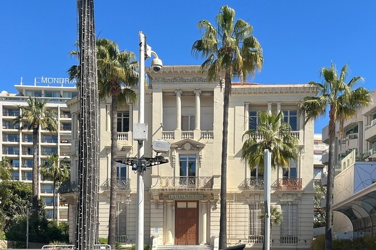
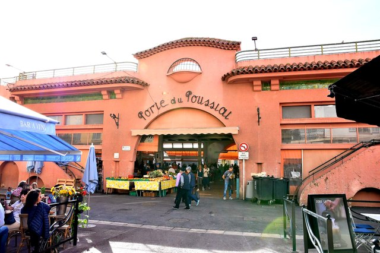

Cannes lives to the rhythm of its big events, the Film Festival first among them, but it is worth visiting all year round. Between the Croisette and its palace hotels, the harbour and Le Suquet, everything is within walking distance.
For the perfect day, keep time for the Lérins Islands: boats leave from the harbour, right below the old town.
A bit of history
Cannes was just a small fishing village below the Suquet when, in 1834, former British Lord Chancellor Lord Brougham, held up by a cholera epidemic, stopped here and decided to build a villa. English and Russian aristocrats followed and it became a winter resort.
The film festival, planned in 1939 and launched in 1946, then made it one of the best-known towns in the world.
Things to do in Cannes
La Croisette

The Riviera’s most famous boulevard, lined with palace hotels and private beaches. The walk continues to Pointe Croisette and its gardens. Book a guided tour or activity in Cannes
The Palais des Festivals
The interior is closed outside events, but everyone comes to be photographed on the steps. Next to it, the stars’ handprints are set in the pavement. This is where the Cannes Film Festival takes place in May and Les Plages Électroniques in August.
La Malmaison art centre

On the Croisette, a short walk from the Palais, the last remnant of the old 1863 Grand Hôtel hosts major modern and contemporary art exhibitions. Reopened in 2025 after an extension, it also has a rooftop café facing the bay.
Le Suquet

The old town on its hill: cobbled lanes, restaurant terraces and, at the top, Notre-Dame-d’Espérance church with a view over the whole bay.
The Musée des Explorations du Monde
At the top of Le Suquet, in the former castle of the Lérins monks: collections from five continents and a tower with the best panorama in Cannes.
Forville market

Cannes’s covered market at the foot of Le Suquet: fruit, vegetables, fish and cheese on Tuesday to Sunday mornings, a flea market on Mondays.
Rue d’Antibes
The main shopping street, parallel to the Croisette, for shopping away from the seafront crowds.
How to get to Cannes
By train
Cannes station is right in the centre, a few minutes’ walk from the Croisette. TER trains reach Nice in about half an hour and Antibes in about ten minutes.
From Nice airport
Express buses link the airport with Cannes. With luggage or as a group, a private transfer is the simplest option.
Practical info 2026: Cannes
- Works on the Croisette: the boulevard is undergoing major embellishment and modernisation works, carried out in stages from 2026 until around 2030. Traffic and parking may be disrupted: come by train (the station is five minutes’ walk from the Croisette) or use the town-centre car parks. The easiest option is to book a private chauffeur transfer, which drops you right at your hotel with no parking to find.
- Boats to the Lérins Islands: departures from the end of quai Saint-Pierre (Old Port). Riviera Lines serves Sainte-Marguerite (€18.50 adult return in 2026); only Planaria, run by the monks, sails to Saint-Honorat.
- Mougins and Grasse without a car: from Cannes station, Palm Express B or Zou! line 660 to Val de Mougins; TER trains also link Cannes and Grasse.
- La Malmaison art centre (47 boulevard de la Croisette): €6.50 full price, €3.50 for 18–25s, free for under-18s. Tuesday to Sunday 10 am–1 pm and 2–6 pm; daily 10 am–7 pm in July and August. Hours change between exhibitions: check before you go.
- Last boat: in winter the last return from Sainte-Marguerite leaves around 5pm. Do not miss it, there is nowhere to stay on the island.
- Don’t miss: our guide to Christmas in Cannes 2026 (Christmas village dates).
Prices and opening hours checked in November 2026 with tourist offices and the sites themselves; they can change, so check before you go.
Tips for visiting Cannes
- During the Cannes Film Festival and the big trade fairs, hotels are full and prices soar: book very early or come at another time.
- Do the Forville market in the morning, then climb Le Suquet before the heat.
- Keep a day for the Lérins Islands, the most enjoyable trip from Cannes.
Tours and activities in Cannes
Book online in minutes, with free cancellation on most activities and traveller reviews to help you choose.
-
Things to do in Cannes
Guided tours, tastings, boat trips around the bay.
-
Boat trips from Cannes
Cruises, catamarans, trips to the Lérins Islands.
-
French Riviera private transfer
Nice airport, station, hotel or port: a private driver takes you to Cannes in a premium van or saloon, with a fixed price per vehicle shown before you book.
Partner links.
Nearby
- Le Suquet about 5 min on foot
- La Croisette about 25 min on foot
- Palm Beach about 3 km away
Frequently asked questions
Can you visit the Palais des Festivals?
The interior is only open during events or on guided tours run by the tourist office. You can photograph the steps freely.
Are the beaches in Cannes public?
There are free public beaches, especially at both ends of the Croisette and next to the Palais, and many private beaches.
When is the Cannes Film Festival?
Every year in May, for about twelve days. Screenings are for industry professionals and guests.
How long should you spend in Cannes?
Allow one day, two with the islands.
What is there to see near Cannes?
In this guide, the closest places are Le Suquet (about 5 min on foot), La Croisette (about 25 min on foot) and Palm Beach (about 3 km away).